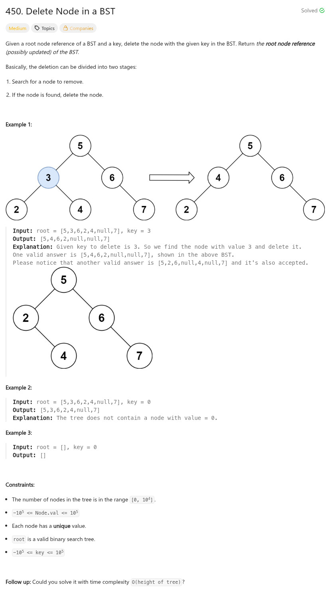

參考資訊：
https://algo.monster/liteproblems/450
https://www.cnblogs.com/grandyang/p/6228252.html
題目：

/**
* Definition for a binary tree node.
* struct TreeNode {
* int val;
* TreeNode *left;
* TreeNode *right;
* TreeNode() : val(0), left(nullptr), right(nullptr) {}
* TreeNode(int x) : val(x), left(nullptr), right(nullptr) {}
* TreeNode(int x, TreeNode *left, TreeNode *right) : val(x), left(left), right(right) {}
* };
*/
class Solution {
public:
TreeNode* deleteNode(TreeNode* root, int key) {
if (!root) {
return root;
}
if (root->val > key) {
root->left = deleteNode(root->left, key);
}
else if (root->val < key) {
root->right = deleteNode(root->right, key);
}
else {
if (!root->left || !root->right) {
root = root->left ? root->left : root->right;
}
else {
struct TreeNode *cur = root->right;
while (cur->left) {
cur = cur->left;
}
cur->left = root->left;
root = root->right;
}
}
return root;
}
};